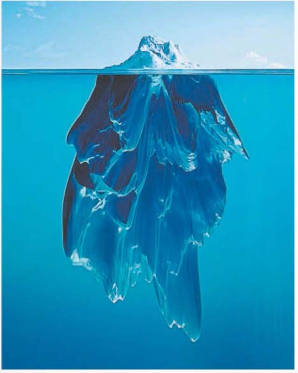
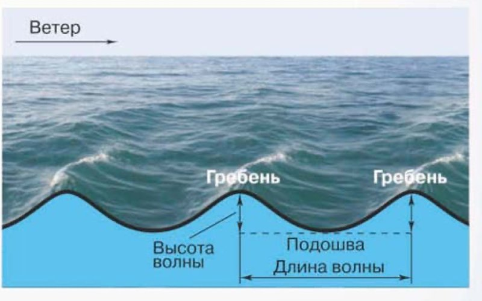

Воды Океана
Амина, это тема про то, почему морская вода солёная, где она теплее, а где холоднее, и почему она никогда не стоит на месте.
Ты заходишь в море, набегает волна — и во рту становится солоно. А если после купания посидеть на солнце, на коже остаётся белый налёт. Это соль: вода испарилась, а соль осталась.
Вот с этого учебник и начинает. Оказывается, в каждом литре океанской воды примерно 35 граммов солей — почти две столовые ложки. Пить такую воду нельзя, поэтому на кораблях возят запас пресной воды.
Дальше — про тепло. У экватора вода круглый год как в тёплой ванне, а у полюсов она замерзает, и по Океану плавают огромные ледяные горы.
И третье: вода всё время движется. Ветер поднимает волны и гонит течения длиной в тысячи километров, подводное землетрясение может родить страшную волну цунами, а Луна и Солнце тянут воду к себе — от этого бывают приливы и отливы.
Вот четыре части темы:
У каждого шага написано, на какой странице учебника искать. Внизу шага есть «Подробнее, как в учебнике»: там всё, что есть на этих страницах, ничего не пропущено. Сначала учи по коротким шагам, а перед уроком открой «подробнее».
Надпись вверху шага подскажет, откуда он: синяя — из учебника, золотая — задание учебника, оранжевая — сверх учебника (пересказ, словарик, игры, самопроверка). В «Содержании» шаги так же разбиты на группы.
Подробнее, как в учебнике · с. 107
- § 33 «Воды Океана» относится к разделу «Гидросфера — водная оболочка Земли» (это написано наверху страницы).
- Параграф открывается строчкой курсивом — это вопросы подтем: «Почему вода в Океане солёная. Везде ли в Океане солёность воды одинакова. Как меняется температура воды в Океане. Как движется вода в Океане». Дальше каждый такой вопрос становится заголовком.
- Наверху с. 107 — фотография-заставка параграфа: под водой стая рыб, рядом песчаный берег и полоса прибоя.
- Все факты с. 107 разобраны на шагах 2 и 3, с. 108 — на шагах 4 и 5, с. 109 — на шагах 6, 7 и 8, с. 110 — на шагах 8, 9 и 17.
Что такое солёность
Чистой воды, в которой совсем ничего не растворено, в природе почти не бывает. Даже в дождевой капле что-нибудь да растворено. А сколько именно веществ растворено в воде — это её важнейшее свойство, оно называется солёность.
Солёность измеряют в промилле. Слово незнакомое, но идея простая. Ты знаешь процент: процент (%) — это одна сотая доля числа. А промилле (‰) — это одна тысячная доля числа. Значок похож на процент, только внизу два кружочка.
Солёность — количество веществ в граммах, растворённых в 1 л (1 кг) воды, измеряемое в промилле (‰).
Средняя солёность Мирового океана — 35 ‰. Что это значит? Возьми 1 литр океанической (морской) воды — он весит 1 кг. Если вся вода превратится в пар, на дне останется осадок: 35 граммов солей (твёрдых веществ). Вот и вся расшифровка: «промилле» — это просто «граммов на литр».
А какую воду тогда называют пресной? Ту, солёность которой меньше 1 ‰, то есть меньше одного грамма на литр. Такая вода в реках, озёрах, в кране дома.
Почему её нельзя пить?
Океаническая вода для питья непригодна. Поэтому на морских судах всегда есть запас пресной питьевой воды, а ещё специальные опреснительные установки — приборы, которые отделяют соль от воды прямо на корабле.
Как проверить промилле на кухне
Налей в стакан 1 литр воды и раствори в нём 1 грамм соли (это примерно четверть чайной ложки). Получится солёность 1 ‰ — как у самой солёной пресной воды. А чтобы получилось «как в Океане», соли нужно в 35 раз больше.
Подробнее, как в учебнике · с. 107 (начало)
- Заголовок подтемы: «Почему вода в Океане солёная?»
- В природе практически не встречается вода, не содержащая разных растворённых веществ. Количество растворённого в воде вещества определяет важнейшее свойство воды — солёность.
- Солёность измеряется в промилле. Если процент (%) — это одна сотая доля числа, то промилле (‰) — это одна тысячная доля числа.
- Средняя солёность Мирового океана — 35 ‰. Это значит, что если 1 л (1 кг) океанической (морской) воды превратится в пар, в осадке останется 35 г солей (твёрдых веществ).
- Пресной считается вода, солёность которой меньше 1 ‰.
- Океаническая вода для питья непригодна. Поэтому на морских судах всегда есть запас пресной питьевой воды, а также специальные опреснительные установки.
- Врезка на полях: «Солёность — количество веществ в граммах, растворённых в 1 л (1 кг) воды, измеряемое в промилле (‰)».
- Остальное с этой страницы — на следующем шаге.
Откуда в Океане соль
В водах Океана растворены соединения почти всех химических элементов. Но главное место среди них занимают два — натрий и хлор, на них приходится более 85 %. Из этих двух элементов состоит поваренная соль — та самая, которую мы каждый день кладём в еду. Она и придаёт океанической воде солёный вкус.
А горький привкус морской воде добавляют соли магния. Ещё в водах Океана нашли алюминий, медь, серебро и даже золото — правда, в очень малых количествах. Учебник добавляет: купание в морской воде очень полезно для здоровья.
Откуда же она берётся?
Учебник называет три причины.
Как реки могут солить Океан, если они пресные?
В каждом литре речной воды растворено совсем мало солей — менее 1 грамма. Но рек много, и текут они миллионы лет: общий объём воды, стекающей в Океан, чрезвычайно велик. Капля за каплей соль накапливается.
И главное: вода с поверхности океанов и морей испаряется и уходит облаками, а соли остаются. В течение миллиардов лет вода уходит, а соль остаётся и пополняется — как в кастрюле с супом, которую долго кипятят без крышки.
В водах Мирового океана содержится во много раз больше растворённых веществ, чем в пресной воде.
Подробнее, как в учебнике · с. 107 (продолжение)
- В водах Океана растворены соединения почти всех химических элементов. Главное место среди них занимают натрий и хлор — более 85 %. Из этих двух элементов состоит поваренная соль — та самая, которую мы ежедневно употребляем в пищу. Она и придаёт океанической воде солёный вкус.
- А горький привкус добавляют соли магния.
- Кроме того, в водах Океана обнаружены алюминий, медь, серебро и даже золото, но только в очень малых количествах.
- Купание в морской воде очень полезно для здоровья.
- Откуда берётся соль в Океане? Во-первых, Океан получал соли из растворов, поступавших из недр, ещё при его формировании на ранних стадиях геологической истории Земли.
- Во-вторых, большие количества растворённого вещества приносят в Океан реки. Это одно из звеньев круговорота воды в природе. Хотя в каждом литре речной воды растворено совсем мало солей (менее 1 г), общий объём стекающей в Океан речной воды чрезвычайно велик.
- В-третьих, среди горных пород, слагающих дно и берега Океана, немало растворимых (каменная соль, известняк и др.).
- В течение миллиардов лет вода с поверхности океанов и морей испаряется, а соли остаются и пополняются.
- Поставляют вещество в океанический раствор подводные вулканы и гидротермальные источники, а также органический мир Океана.
- Розовая полоса-вывод в конце страницы: «В ВОДАХ МИРОВОГО ОКЕАНА СОДЕРЖИТСЯ ВО МНОГО РАЗ БОЛЬШЕ РАСТВОРЁННЫХ ВЕЩЕСТВ, ЧЕМ В ПРЕСНОЙ ВОДЕ».
Везде ли солёность одинакова
Представь, что Океан — это очень глубокая чаша. Внизу, в основной толще воды — от нескольких десятков метров и до самого дна, — солёность почти не меняется: она близка к средней, около 35 ‰. Исключение одно: там, где на дне извергаются вулканы, солёность может возрасти в десять раз.
А вот у самой поверхности всё интереснее. Там солёность меняется от экватора к полюсам:
- в экваториальных и умеренных широтах она понижена;
- в тропических — повышена;
- в полярных — наименьшая.
Заметно различаются значения солёности и во внутренних морях.
Что делает воду менее солёной
Солёность снижается там, где:
- выпадает много атмосферных осадков (дождь — это пресная вода, он разбавляет море);
- мало испарение (значит, вода не «уваривается»);
- крупные реки приносят много пресной воды;
- активно происходит таяние льдов.
Пониженную среднюю солёность имеют воды окраинных морей Северного Ледовитого океана, а также Балтийского моря (около 10 ‰).
Самую высокую среднюю солёность имеют воды внутренних морей тропических широт. Солёность вод Красного моря — 42 ‰. Это самое солёное море на Земле.
Солёность в поверхностных океанических водах меняется в зависимости от внешних условий.
До моря от Каспийска — несколько минут пешком, но Каспийское море не часть Океана: это замкнутый водоём, самое большое озеро на Земле. Вода в нём куда менее солёная, чем океанская: в средней части около 12—13 ‰ — почти втрое меньше, чем 35 ‰.
А на севере, у дельты Волги, река так разбавляет воду, что она становится почти пресной. Получается, то самое правило из учебника — «реки приносят пресную воду» — видно прямо у нас.
Подробнее, как в учебнике · с. 108 (первая половина)
- Заголовок подтемы: «Везде ли в Океане солёность воды одинакова?»
- В основной толще воды Мирового океана — на глубине от нескольких десятков метров до самого дна — солёность изменяется мало, она близка к средней — около 35 ‰.
- Исключения составляют те области, где на дне происходит извержение вулканов: здесь солёность может возрастать в десять раз.
- В поверхностных океанических водах солёность изменяется от экватора к полюсам. В экваториальных и умеренных широтах она понижена, в тропических повышена, а в полярных наименьшая.
- Заметно различаются значения солёности во внутренних морях.
- В водах Мирового океана солёность снижается там, где выпадает много атмосферных осадков, мало испарение и куда приносят много пресной воды крупные реки, где активно происходит таяние льдов.
- Врезка: «Пониженную среднюю солёность имеют воды окраинных морей Северного Ледовитого океана, а также Балтийского моря (около 10 ‰)».
- Врезка: «Самую высокую среднюю солёность имеют воды внутренних морей тропических широт. Солёность вод Красного моря — 42 ‰. Это самое солёное море на Земле».
- Розовая полоса-вывод: «СОЛЁНОСТЬ В ПОВЕРХНОСТНЫХ ОКЕАНИЧЕСКИХ ВОДАХ МЕНЯЕТСЯ В ЗАВИСИМОСТИ ОТ ВНЕШНИХ УСЛОВИЙ».
- Наверху страницы — колонтитул «§ 33. Воды Океана».
Тёплая вода и холодная
Океанские воды, как и всё на Земле, получают тепло в основном от Солнца. Ты уже знаешь: больше всего тепла Земля получает в жарком поясе — области между тропиками.
Поэтому и вода теплее всего у экватора: температура поверхностных вод там круглый год +25…+28 °C. Это как хорошо прогретая ванна, и так — в любой месяц, хоть в январе.
Чем дальше от экватора, тем меньше тепла и тем ниже температура воды. В полярных областях она от 0 до −1,5 °C. Обрати внимание на минус: это не ошибка. Солёная вода замерзает при температуре ниже 0 °C, поэтому морская вода может быть холоднее нуля и всё ещё оставаться водой.
Температура поверхностных вод колеблется ещё и в зависимости от сезона года и времени суток — как у нас в Каспийске летом днём вода теплее, чем ночью.
А что на глубине?
На глубине температура воды низкая. И в толще Океана она, как и солёность, довольно постоянная — около +2 °C. Только там, где действуют подводные вулканы, температура намного выше.
Океан похож на дом, где нагрета только крыша. Наверху, у экватора, +25…+28 °C, у полюсов — около нуля, а внизу, на глубине, везде примерно +2 °C, и летом, и зимой.
Подробнее, как в учебнике · с. 108 (вторая половина)
- Заголовок подтемы: «Как меняется температура воды в Океане?»
- Океанские воды, как и всё на Земле, получают тепло в основном от Солнца. Вы знаете, что больше всего тепла Земля получает в жарком поясе — области между тропиками.
- Температура поверхностных вод в районе экватора круглый год +25…+28 °C.
- Чем дальше от экватора, тем меньше тепла, тем ниже и температура воды. В полярных областях она составляет от 0 до −1,5 °C (солёная вода замерзает при температуре ниже 0 °C).
- Температура поверхностных вод колеблется также в зависимости от сезона года и времени суток.
- На глубине температура воды низкая. И в толще Океана она, как и солёность, довольно постоянная — около +2 °C. Только там, где действуют подводные вулканы, температура намного выше.
- На этой же странице — фотография «Рис. 74. Айсберг». Она и текст про морские льды — на следующем шаге.
Морские льды и айсберги
В полярных широтах большую часть года стоят сильные морозы. На обширных площадях поверхности Океана вода замерзает — так образуются морские льды. В полярных широтах льды могут существовать несколько лет и достигать толщины 5—7 метров. Это выше двухэтажного дома.
А вот айсберги — это совсем другое, их не следует путать с морскими льдами. Айсберг не намёрз на поверхности моря: он откололся от ледника, который сполз с суши в море.
Айсберги — плавающие гигантские глыбы, отколовшиеся от ледников, сползающих с суши в море.

Высота айсбергов от основания до вершины может достигать нескольких сотен метров. Основные источники поступления айсбергов в Океан — обширные ледники Антарктиды и Гренландии.
Посмотри на фотографию: над водой торчит только макушка, а основная часть спрятана внизу. Поэтому айсберги и опасны для кораблей.
По мере приближения к полюсам температура поверхностных океанических вод понижается. На глубине она постоянно низкая.
Подробнее, как в учебнике · с. 108–109
- В полярных широтах большую часть года бывают сильные морозы. На обширных площадях поверхности Океана вода замерзает и образуются морские льды.
- В полярных широтах льды могут существовать несколько лет и достигать толщины 5—7 м.
- Поверхностные морские льды не следует путать с айсбергами (рис. 74).
- Высота айсбергов от основания до вершины может достигать нескольких сотен метров.
- Основные источники поступления айсбергов в Океан — обширные ледники Антарктиды и Гренландии.
- Врезка: «Айсберги — плавающие гигантские глыбы, отколовшиеся от ледников, сползающих с суши в море».
- Подпись к фотографии на с. 108: «Рис. 74. Айсберг».
- Розовая полоса-вывод: «ПО МЕРЕ ПРИБЛИЖЕНИЯ К ПОЛЮСАМ ТЕМПЕРАТУРА ПОВЕРХНОСТНЫХ ОКЕАНИЧЕСКИХ ВОД ПОНИЖАЕТСЯ. НА ГЛУБИНЕ ОНА ПОСТОЯННО НИЗКАЯ».
Волны, прибой и цунами
Океанические воды находятся в постоянном движении. На поверхности мы чаще всего видим волны. Тот, кому приходилось купаться в море, знает, как приятно качаться на волнах: тебя поднимает и опускает, но вперёд не уносит. Это потому, что частицы воды совершают колебательные движения вверх—вниз.
Волны обычно образуются под действием ветра и иногда достигают огромных размеров. Правило простое: чем сильнее ветер, тем выше волны.
При приближении к берегу волна становится круче и опрокидывается (разрушается) — это прибой. Тот самый шум, под который хорошо засыпать.

На схеме подписаны части волны: гребень — её вершина, подошва — самое низкое место, высота волны — от подошвы до гребня, длина волны — расстояние между двумя гребнями. И стрелка ветра, от которого всё это началось.
Зачем волны нужны морю
При волнении вода перемешивается. Это значит, что тепло, кислород, питательные вещества, необходимые живым организмам, лучше распределяются в толще воды. Получается, волны — это как ложка, которая размешивает чай: без неё сахар лежал бы на дне.
Цунами
Если где-то в глубинах Океана происходит сильное подводное землетрясение или извержение вулкана, может образоваться цунами. Это волна, которая движется с огромной скоростью — до 800 км/ч, быстрее самолёта. У берега её высота может достигать нескольких десятков метров. Обрушившись на берег, цунами приносит катастрофические разрушения.
Главное отличие от обычной волны: цунами рождает не ветер, а толчок из глубины Земли.
А часто ли бывают цунами?
Цунами возникают там, где на дне Океана часто случаются сильные землетрясения, — чаще всего у берегов Тихого океана. Там на побережьях заранее ставят датчики и сирены, чтобы люди успели уйти от берега.
Подробнее, как в учебнике · с. 109
- Заголовок подтемы: «Как движется вода в Океане?»
- Океанические воды находятся в постоянном движении. На поверхности мы чаще всего видим волны (рис. 75).
- Тот, кому приходилось купаться в море, знает, как приятно качаться на волнах. Это потому, что частицы воды совершают колебательные движения вверх—вниз.
- Волны обычно образуются под действием ветра и иногда достигают огромных размеров. Чем сильнее ветер, тем выше волны.
- При приближении к берегу волна становится круче и опрокидывается (разрушается) — это прибой.
- При волнении вода перемешивается. Это значит, что тепло, кислород, питательные вещества, необходимые живым организмам, лучше распределяются в толще воды.
- Если где-то в глубинах Океана происходит сильное подводное землетрясение или извержение вулкана, может образоваться цунами. Это волна, которая движется с огромной скоростью — до 800 км/ч. У берега её высота может достигать нескольких десятков метров. Обрушившись на берег, цунами приносит катастрофические разрушения.
- Подпись к схеме: «Рис. 75. Схема волны». На самой схеме подписаны: Ветер (стрелка), Гребень (у двух вершин), Подошва, Высота волны, Длина волны.
Океанические течения
Волна качает воду вверх-вниз на месте. А ещё в Океане возникают горизонтальные перемещения больших масс воды — это океанические течения. Про них знали ещё древние мореплаватели: корабль без вёсел и парусов сам куда-то уплывал.
Течение — это настоящая река внутри Океана, только без берегов:
- протяжённость — до нескольких тысяч километров;
- ширина — десятки и сотни километров;
- глубина — сотни метров.
Тёплые и холодные
Температура воды в течениях обычно отличается от окружающей: она или выше — тогда течение тёплое, или ниже — тогда холодное. На картах тёплые течения показаны красными стрелками, а холодные — синими. Учебник просит: посмотрите на карту океанов в атласе.
Куда они текут? Тёплые течения обычно движутся вдоль экватора, а затем поворачивают к северу или к югу — в более холодные области. Холодные течения, наоборот, направлены в сторону экватора.
Самое известное тёплое течение — Гольфстрим. Самое известное холодное — течение Западных Ветров в Южном полушарии.
Океанические течения обычно возникают под воздействием постоянных ветров.
Как запомнить, куда текут тёплые, а куда холодные
У экватора жарко. Тёплое течение набирает тепло у экватора и «везёт» его подальше от него — к северу или к югу. А холодное набирает холод там, где холодно, и «везёт» его обратно к экватору. Получается кольцо.
Подробнее, как в учебнике · с. 109–110
- В Океане возникают и горизонтальные перемещения больших масс воды — океанические течения. Об этом знали древние мореплаватели.
- Протяжённость течений велика — до нескольких тысяч километров. Их ширина достигает десятков и сотен километров, а глубина — сотни метров.
- Температура воды в течениях обычно отличается от окружающей — она или выше (в тёплых течениях), или ниже (в холодных).
- На картах тёплые течения в Океане показаны красными стрелками, а холодные — синими. В тексте задание: «Посмотрите на карту океанов в атласе».
- Тёплые течения обычно движутся вдоль экватора, а затем поворачивают к северу или к югу — в более холодные области. Холодные течения, наоборот, направлены в сторону экватора.
- Самое известное тёплое течение — Гольфстрим, а самое известное холодное — течение Западных Ветров в Южном полушарии.
- Врезка: «Океанические течения обычно возникают под воздействием постоянных ветров».
Приливы и отливы
В прибрежных районах можно наблюдать приливы и отливы. Вода в течение суток то отступает от берега, обнажая большие участки дна, то возвращается. Утром лодка стоит на воде, а днём — на песке, и до воды нужно идти сотню метров.
Откуда это? Такие колебания уровня Океана связаны с притяжением океанской воды массой Луны и Солнца. Луна тянет воду к себе, и в её сторону вода немного «горбится».
Правда, в некоторых морях приливы и отливы невелики и поэтому малозаметны. В нашей стране они хорошо выражены на берегах Белого и Охотского морей — до 13 м в заливе Пенжинская губа. А самые высокие приливы на Земле — в заливе Фанди Атлантического океана (Канада) — до 18 м. Это высота шестиэтажного дома.
Волны, океанические течения, цунами, приливы и отливы — это виды движения воды в Океане. Они происходят под действием внешних и внутренних сил Земли.
Солёность и температура — свойства воды в Океане. Айсберг. Ветровые волны и цунами. Океанические течения. Приливы и отливы.
Что такое «внешние и внутренние силы Земли»
Внешние — те, что действуют снаружи, с поверхности и из космоса: ветер, притяжение Луны и Солнца. Внутренние — те, что идут из глубины Земли: подводные землетрясения и извержения вулканов, от которых рождается цунами.
Подробнее, как в учебнике · с. 110
- В прибрежных районах можно наблюдать приливы и отливы. Вода в течение суток то отступает от берега, обнажая большие участки дна, то возвращается.
- Такие колебания уровня Океана связаны с притяжением океанской воды массой Луны и Солнца.
- Правда, в некоторых морях приливы и отливы невелики и поэтому малозаметны.
- В нашей стране они хорошо выражены на берегах Белого и Охотского морей (до 13 м в заливе Пенжинская губа).
- Самые высокие приливы — в заливе Фанди Атлантического океана (Канада) — до 18 м.
- Розовая полоса-вывод: «ВОЛНЫ, ОКЕАНИЧЕСКИЕ ТЕЧЕНИЯ, ЦУНАМИ, ПРИЛИВЫ И ОТЛИВЫ — ЭТО ВИДЫ ДВИЖЕНИЯ ВОДЫ В ОКЕАНЕ. ОНИ ПРОИСХОДЯТ ПОД ДЕЙСТВИЕМ ВНЕШНИХ И ВНУТРЕННИХ СИЛ ЗЕМЛИ».
- Рубрика «Запомните:» — «Солёность и температура — свойства воды в Океане. Айсберг. Ветровые волны и цунами. Океанические течения. Приливы и отливы».
- Внизу страницы — вопросы и задания к параграфу. Все они собраны на шаге 17.
Словарик: солёная вода
ИграНажми на карточку, и она перевернётся. Словарик из двух частей, открой все карточки.
Словарик: лёд и движение воды
ИграВторая часть: льды, волны, течения, приливы.
Числа с секретом
ИграВ параграфе много чисел, и за каждым что-то прячется. Нажми на число слева, потом на его разгадку справа.
От чего движется вода?
ИграПрочитай карточку и выбери, что заставило воду двигаться: ветер, толчок из глубины Земли или притяжение Луны и Солнца.
Как рождается прибой
ИграЧто за чем происходит от первого дуновения ветра до шума волны у берега? Нажимай по порядку, от первого к последнему.
Найди лишнее
ИграТри из одной компании, одно чужое. Найди чужое.
Проверь себя
Вопросы из учебника
Это все вопросы и задания в конце параграфа, с теми же номерами и по тем же группам, что в твоём учебнике. Рядом с каждым написано, на каком шаге искать ответ. Отвечай своими словами: так лучше запоминается, и учитель услышит, что ты поняла, а не заучила.
Откройте атлас
Найдите на карте океанов в атласе течения: Гольфстрим, Западных Ветров, Лабрадорское, Перуанское, Северо-Атлантическое.
Подсказка: два из них названы в самом параграфе — найди их на шаге 8. Остальные ищи в атласе по подписям вдоль стрелок. И помни правило цвета: стрелки одного цвета — тёплые, другого — холодные.
Шаг 8 · Океанические теченияЭто я знаю
Почему вода в Океане солёная?
Подсказка: учебник называет три причины («во-первых», «во-вторых», «в-третьих») и добавляет к ним ещё несколько источников. Плюс не забудь про испарение: вода уходит, а соль остаётся.
Шаг 3 · Откуда в Океане сольПочему в Красном море солёность больше, чем в Балтийском?
Подсказка: сравни, в каких широтах лежит каждое море и что там с осадками, испарением и реками. Список «от чего солёность снижается» — на шаге 4, там же обе врезки с числами.
Шаг 4 · Везде ли солёность одинаковаПочему и как меняется температура воды в Мировом океане?
Подсказка: «почему» — откуда вода берёт тепло. «Как» — в четыре шага: от экватора к полюсам, по сезонам, по времени суток и вглубь. Все четыре есть на шаге 5.
Шаг 5 · Тёплая вода и холоднаяЧем обусловлено движение воды в Океане?
Подсказка: перечисли виды движения воды и у каждого назови причину. Их четыре, и все они собраны на последнем шаге в виде кирпичиков.
Шаги 7–9 · Как движется вода Шаг 18 · КирпичикиПочему образуются приливы и отливы?
Подсказка: ответ в одном предложении учебника, и в нём названы два небесных тела. Ищи на шаге 9.
Шаг 9 · Приливы и отливыСолёность воды измеряется: а) в граммах; б) в промилле; в) в сантиметрах.
Подсказка: в сантиметрах меряют длину — этот вариант отпадает сразу. А из двух оставшихся один — единица измерения солёности, другой — просто вес. Проверь по определению на шаге 2.
Шаг 2 · Что такое солёностьОт экватора к полюсам температура воды в поверхностном слое: а) повышается; б) понижается.
Подсказка: вспомни два числа — сколько градусов у экватора и сколько в полярных областях. Сравни их. Это шаг 5, и то же самое написано в выводе на шаге 6.
Шаг 5 · Тёплая вода и холоднаяВолны в Океане возникают под воздействием: а) силы тяжести; б) ветра.
Подсказка: в параграфе есть правило «чем сильнее …, тем выше волны». Подставь пропущенное слово — и ответ готов. Шаг 7.
Шаг 7 · Волны, прибой и цунамиЭто я могу
Систематизируйте свои знания о течениях по плану: 1. Каково значение течений для нашей планеты? 2. Как образуется течение? 3. Какие бывают течения? 4. Какие самые крупные течения? Результаты оформите в виде таблицы.
Подсказка: сделай таблицу из двух столбцов — слева пункт плана, справа твой ответ. Пункты 2, 3 и 4 целиком есть на шаге 8 (врезка про постоянные ветры, тёплые и холодные, Гольфстрим и течение Западных Ветров). А для пункта 1 подумай сама: течения переносят тепло и холод из одних мест в другие — что это значит для погоды на берегах и для жизни в Океане?
Шаг 8 · Океанические теченияПодсчитайте, сколько соли нужно растворить в 1 л воды, чтобы получить солёность воды, как в Красном море.
Подсказка: сначала вспомни, что означает запись «35 ‰» для 1 литра воды (шаг 2) — там это прямо расшифровано в граммах. Потом посмотри солёность Красного моря во врезке на шаге 4 и сделай то же самое с этим числом. Считать почти не придётся.
Шаг 2 Шаг 4Нанесите на контурную карту течения, названные в рубрике «Откройте атлас» (красным цветом тёплые течения, синим — холодные).
Подсказка: правило цвета — на шаге 8. Само название течения на карте атласа обычно написано вдоль стрелки, а цвет стрелки подскажет, тёплое оно или холодное. Переноси на контурную карту по береговым линиям: сначала найди материк, потом стрелку рядом с ним.
Шаг 8 · Океанические теченияЭто мне интересно
Морские течения позволили шотландцам добраться до Австралии (вспомните роман Ж. Верна «Дети капитана Гранта»). Определите по карте, какие течения помогали кораблям доплыть из Англии в Австралию.
Подсказка: проведи по карте пальцем путь от Англии на юг вдоль Африки и дальше на восток. Какие стрелки идут в ту же сторону? Помни про самое известное холодное течение Южного полушария — оно как раз огибает Землю с запада на восток (шаг 8).
Шаг 8 · Океанические теченияВспомните, какие из ваших любимых героев потерпели кораблекрушение. Какие знания о природе помогли им спастись и выжить?
Подсказка: это вопрос про твои книги и фильмы, готового ответа в параграфе нет. Но кое-что из этой темы пригодилось бы любому герою: почему нельзя пить морскую воду и как получить пресную (шаг 2), куда понесёт плот течение (шаг 8), почему у берега волна опрокидывается (шаг 7).
Шаг 2 Шаг 7 Шаг 8Подробнее, как в учебнике · с. 110
- Все вопросы и задания с. 110 перечислены выше, в том же порядке и с теми же номерами, что в книге.
- Они разбиты на группы значками на полях: «Откройте атлас» — задание 1; «Это я знаю» — задания 2—10; «Это я могу» — задания 11—13; «Это мне интересно» — задания 14—15.
- Задания 7—10 — с вариантами ответа а), б), в).
Чем обусловлено движение воды в Океане?
Это вопрос 5 из конца параграфа, и он собирает вместе всю вторую половину темы. Вот четыре «кирпичика» для ответа. Открой их, а потом попробуй ответить своими словами, не подглядывая.
Волны, океанические течения, цунами, приливы и отливы — это виды движения воды в Океане. Они происходят под действием внешних и внутренних сил Земли.
Вода в Океане солёная — в среднем 35 граммов солей на литр; у поверхности она тем холоднее, чем ближе к полюсам, а в глубине везде около +2 °C; и она никогда не стоит на месте: ветер поднимает волны и гонит течения, подводные землетрясения рождают цунами, а притяжение Луны и Солнца даёт приливы и отливы.